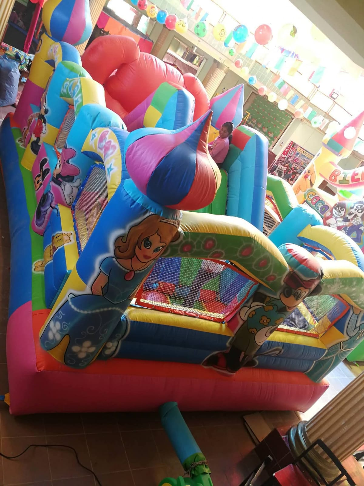

Inflables
Castillos, recorridos y áreas de juego para llenar la celebración de color y movimiento.
Juegos de salto y recorridos para celebraciones infantiles.
Antes de elegir
Cuéntanos las edades, las medidas del área y si el espacio es cubierto. La superficie y el acceso se revisan antes de confirmar.